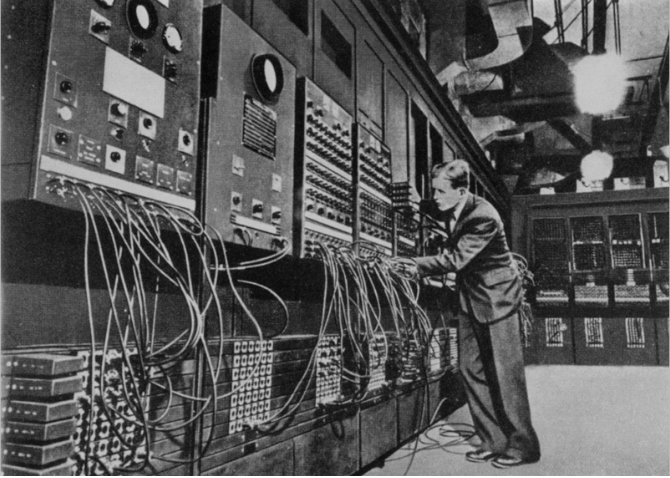
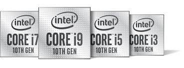
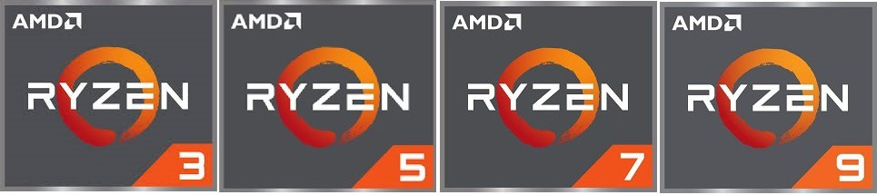
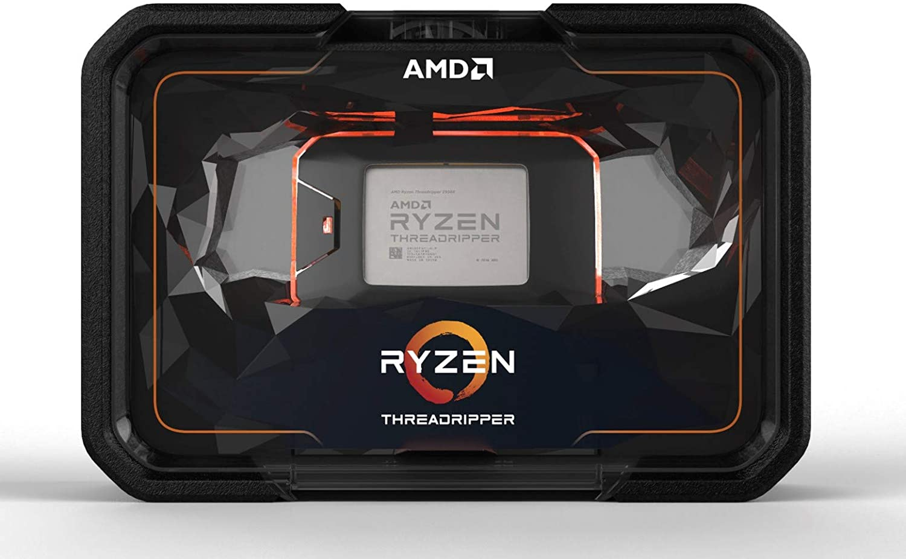

CV X
CV X

Les processeurs, des objets petits mais puissants
- 1. Qu'est-ce qu'un processeur ?
- 2. Les anciens processeurs
- A. Le premier processeur
- 3.Quelle processeurs pour quelle utilisations
- 4.Les AMD FX et threadrippers
- A. Les AMD FX
- B. Les AMD threadripper
- 5. L'architecture des processeurs
- 6. Nouveau concurrent : Apple
Un processeur est un circuit électronique qui effectue les opérations arithmétiques et logiques. Celui-ci se place sur la carte mère au niveau du socket.
Le socket peut changer en fonction de la société qui a créé le processeur ou bien de la gamme de celui-ci.
Le premier processeur
Le intel 4004 n'est pas vraiment un processeur mais plûtot un microprocesseur qui été à l'origine utilisé dans des calculatrices. Son prix à cette époque était de 200$ (soit 166.1€)

Intel 4004
La société qui a créé le tout premier processeur est celle d' Intel avec son Intel 4004, créé en 1971, il fût également commercialisé à cette même date
Caractéristiques du Intel 4004
- Fréquence : 0.74 MHz
- RAM intégrée : 640 octets
- Nombre de transistors : 2300
- Finesse de gravure : 10 µm
- Puissance de calcul : 92600/s
- Bits : 4
IL fût nottamment utilisé dans le tout premier ordinateur : l'ENIAC qui occupait une superficie de 160 m²
ENIAC
C'est en 1993 que Intel transforme ses microprocessseurs en processeur, nottamment avec l'arrivée de leur nouvelle gamme : les intels pentium.
Voici leurs caractéristiques moyennes :
- Fréquence : 66 MHz
- Nombre de transistors : 3,1 millions
- Finesse de gravure : 0.8 µm
- Puissance de calcul : 66 000 000/s (105331% de plus que le intel 4004)
- Bits : 32
Une deuxième société, fondée en 1969 prend la deuxième place en fournisseur de microprocesseur, juste derriére intel, AMD. AMD(Advanced Micro Devices)est une société qui fournit des processeurs mais également des cartes graphiques
On voit ici, une grande avancée technologique, la fréquence augmente, tout comme le nombre de transistors et de calcul/seconde. Il y a enfin une diminution de la finesse de gravure qui diminue de 0.2µm
Si les processeurs se sont améliorés , les ordinateurs on eux aussi eu droit à un nouveau design, voici nottammtent un ordinateur de 1993, à la date de sortie des processeurs intel pentium.
Des processeurs innovants, intel core et AMD ryzen
Les processeurs connaissent aujourd'hui comme à cette époque à un grand succés. De nouvelles gammes sont nées chez les deux constructeurs :
|
Date de sortie :2008 |
 |
Pour Intel, les intels core i3, i5, i7, i9 |
|
Date de sortie :13 décembre 2016 |
 |
Et pour AMD, les ryzens 3,5,7,9. |
Chacune de ces marques a un systéme de générations, par exemple pour intel, nous avons des intel core de premiére génération jusqu'à aujourd'hui la dixiéme génération
AMD posséde aussi ce systéme mais il existe uniquement les ryzens de premiére, troisiéme et cinquiéme génération.
Les AMD FX !
Les processeurs FX sont les anciennes gammes des processeur AMD
Pour les processeurs AMD Threadripper, ce sont les processeurs les plus puissants jamais produit par AMD, ils peuvent atteindre 64 coeurs contre habituellment 4 à 18 coeurs pour leur processeur ryzen et intel. Ce sont des processeurs pour le grand public cependant ils sont principalement utilisés par des entreprises qui ont besoin de beaucoup de puissance, nottament dans le montage vidéo et bien d'autres tâches plus complexe.
Leur processeur le plus puissant ches AMD est donc le AMD threadripper 3990X
 x86 est une architecture de processeur. Cette architecture est la plus vieille, car c'est elle qui permet les applications 32 bits. De plus, elle limite le quantité de RAM que le processeur peut supporter. Pour windows, la RAM est donc limitée à 3go.
Une nouvelle architecture est né, x64, elle est assez récente. Elle permet l'utilisation des applications en 64 bits et n'a plus de limite en quantité de RAM.
C'est en 2020 que la société Apple annonce leur nouveaux macbook air et pro. Cependant ils ne plus sont à présent équipés d'un processeur Intel mais d'un processeur que Apple à créé, le processeur M1.
Les processeur M1 n'ont pas d'architecture x86 ou x64 mais ARM 64 bits. Cependant peu de logiciels fonctionnent parfaitement avec cette architecture. Pour résoudre ce problème, Apple à décidé d'émmuler les applications